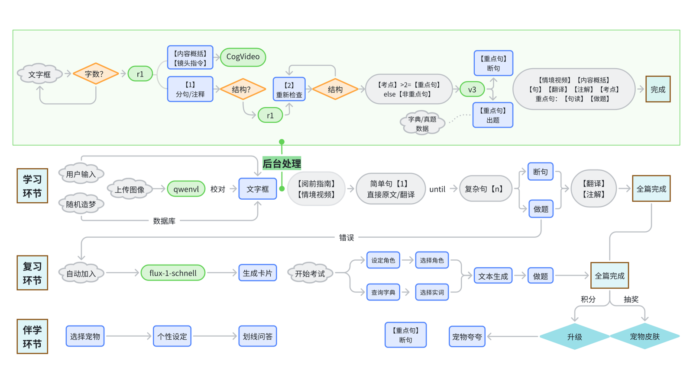

2025.09 – 2028.06
中山大学
中国古代文学 · 硕士在读
About
如果AI确实通过语言形式了解复杂语义，学会了更好的推理，且朝着更复杂、真实的世界前进，那么，给世界留下一个怎样的AI——它能不能读懂文学，能不能理解暮秋时分诗人的身体感应，这便是新一代人文学者不可回避的责任和义务。在面对先辈们充满褶皱、立体复杂的文学遗产，其话语权不应该完全出让给机器，和机器的设计师。既然AI确实拥有重塑我们未来知识结构的可能性，那么，督促AI朝着更切实继承文学遗产，监测AI对文学的能力到了何处，是否有朝着"文学是人学"的理解方向进步，这些应该是（至少一部分）人文研究者需要致力于探索的志业。假使文学研究学术共同体以AI目前缺乏身体、情感、记忆、意识为由，一票否认其对文学的阐释力，漠不关心AI对文学研究的潜力，那么我们行将看到的未来，更可能是那个不曾接触文学的世界驱逐文学，而不是相反。
Selected projects
第一作者 · 《数字人文》（C 集）录用待出版 · PaddleOCR 全球衍生模型挑战赛冠军（81.5 分）

第一作者 · 优胜奖（海峡两岸暨港澳大学生计算机创新作品赛，省一等奖级）· 入选第五届东亚古籍数字人文国际会议

项目网站 ↗内测邀请码：XLNC-69YY-GYNP
三等奖 · LT4HALA @ LREC-2026
计量文体学

个人实验
一个反问式的实验：如果一个语言模型的全部语料都锚定在 1840 年之前，它的输入输出只有文言文，知识边界止步于传统知识系统，它会用怎样的方式回应被译成文言的现代问题？
文言文情境化学习 AI 平台

第一作者 · 赛道第一 · 系统报告收录于 CCL2025 论文集
Education
中国古代文学 · 硕士在读
中国语言文学 · 拔尖班
校优秀毕业生。修读中国文学史、中国文学批评史、历史文献导读、文献学、数字人文、自然语言处理、计算语言学、机器学习、线性代数等课程。2024.09 – 2025.01 于台湾政治大学交换，修读机器学习概论等交叉课程。
Experience
AI 产品经理（实习）
独立负责网络文学作品文笔质量自动评估系统，产出为发明专利《一种基于语言模型持续预训练与机器学习融合的网络文学作品文笔质量评估方法及系统》（申请中）；同时负责 WXG 内部 AI + 办公软件的开发，围绕 Agent 在办公场景的能力，独立完成"提出需求—开发上线—数据验证"的需求闭环。
资源工程师助理（实习）
制定粤语、四川话及多语种语言规则与数据清洗增强规则，清洗 10 万+ 条语料；完成 7 篇多模态语音模型技术报告。